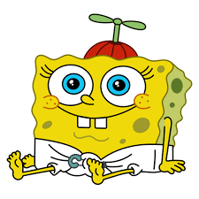

Early Life
SpongeBob was born in a pineapple under the sea in Bikini Bottom. He was raised by his loving parents, Harold and Margaret SquarePants, who encouraged his optimistic and carefree attitude. From a young age, he showed an interest in marine biology and cooking, which later led to his career at the Krusty Krab. His early influences include his best friend, Patrick Star, who shares many of SpongeBob’s silly antics, and his neighbor, Sandy Cheeks, who is a brilliant scientist. The vibrant underwater world of Bikini Bottom played a huge role in shaping SpongeBob’s adventurous spirit and his tendency to see the best in every situation.
SpongeBob as a young sponge, full of potential and joy.
- Born in a pineapple under the sea.
- Raised by his parents Harold and Margaret SquarePants.
- Early interest in marine biology and cooking.
- Best friends with Patrick Star.
- Influenced by Sandy Cheeks' scientific mind.